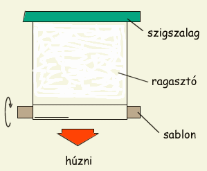
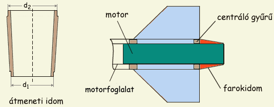

A rakétatest az a központi elem amely összetartja a rakéta alkotórészeit; az esetek nagy részében az ejtõernyõ is benne kap helyet. Két dolog van aminek egy rakétatest meg kell feleljen. Elõször is ki kell bírja a kilövéskor rá ható erõket, indításkor ugyanis alulról a motor tolóereje, felülrõl pedig a tehetetlenségbõl meg a gravitációból származó súlyerõ hat a rá. Modellezõversenyeken látni néha amint "összecsuklik" a rakéta startoláskor, mert a minimális indulótömeg érdekében néha alulméretezik a törzs falvastagságát. Másik dolog amit ki kell a törzs bírjon, az ejtõernyõ kidobásakor keletkezõ belsõ nyomás. Túl vékony falú papírcsövek néha "kinyílnak" a kidobótöltet ellobbanásakor.
A törzs gyakorlatilag bármibõl készülhet ami kellõen erõs és könnyû, így elsõsorban a papír vagy karton, különbözõ mûanyagok vagy az alumíniumlemez jöhet szóba, mivel ezek könnyen beszerezhetõek. Mindegyiknek van elõnye és hátránya is, a legnagyobb különbségek fõként a megmunkálhatóságban mutatkoznak.
|  |
| 1. Ábra: Papírhenger készítése |
Papír: a legkönnyebben felhasználható, mert bármilyen átmérõjû csövet készíthetünk belõle házilag. Egyszerû csomagolópapír néhány rétegben felcsavarva, ragasztóval a rétegek között megfelelõen erõs és nagyon könnyû lesz. Fontos hogy a papír "erezete" hosszirányban legyen, valamint hogy jó erõs ragasztót használjunk, amivel a papír teljes felületét bekenjük, így egy réteges szerkezetet (papír-ragasztó-papír) kapunk. Példaként egy 20 mm átmérõjû, 5 rétegben felcsavart papírtörzs annyira erõs, hogy néha még az ejtõernyõ nélküli földetéréseket is kibíjra, képes szószerint beleállni a földbe anélkül hogy összecsuklana. Minél szorosabban csavarjuk fel a papírt, annál erõsebb lesz a csõ. Legjobb ha van néhány különbözõ átmérõjû elõregyártott sablonunk, amire csak fel kell csavarnunk a papírcsíkot. A mellékelt ábrán szemléltetett módon a papírcsík egyik végét szigetelõszalaggal az asztallapra ragasztjuk és a sablont csavarás közben magunk felé húzzuk, így jó feszesen felcsavart csövet készíthetünk. Számolni kell azzal, hogy száradás során a papírcsõ egy kissé összezsugorodik és nem akar majd lejönni a sablonról.
A papírcsövek legnagyobb elõnye hogy a motor véletlen felrobbanása során nem törnek veszélyes szilánkokra, mint a mûanyag illetve fém törzsek. Ezen jó tulajonságának köszönhetõen én mindig papírcsõbõl készítem a rakétáim törzsét. A papír hátránya leginkább nagyobb méreteknél mutatkozik meg, ahol már nem túl jó a szilárdság/tömeg aránya, emellett nem csavarozható, nem nyitolható stb. Már egy szabályos lyuk fúrása is meglehetõsen körülményes a papírcsõbe. Ezen nagymértékben segíthetünk ha mindkét oldalán epoxyval kenjük be a papírtörzset, ami különben is ajánlatos a vízállósítás érdekében; még jobb ha kívülrõl egy réteg üvegszálszövettel burkoljuk a törzset.
Mûanyagok: leginkább a vízvezetékekhez használt különféle PVC csövek használhatóak jól rakétaépítéshez, mert ezekbõl többféle átmérõjû és falvastagságú létezik és a PVC relatíve jól viseli a hõt is. Ha sikerül megfelelõen vékony falú PVC csövet találni, akkor abból kitûnõ rakétatestet lehet gyártani. Fõként nagy átmérõknél (>50 mm) jó, de egyben veszályes alternatívája a papírnak. A mûanyagcsövek használatának ugyanis van egy nagy hátránya, éspedig az, hogy egy esetleges motorrobbanásnál veszélyes PVC szilánkok keletkezhetnek, amelyek könnyen az ember húsába fúródhatnak. A helyzetet tovább szépíti, hogy a mûanyagszilánkok röntgenen nem látszanak, így eltávolításuk sem egyszerû. Mûanyagcsövet ezért csak jól bevált, megbízható, elõzõleg tesztpadon lemért motrokhoz ajánlatos használni.
Versenycélokra használják az üvegszál- illetve szénszálerõsítésû mûanyagokból készült törzseket, ezek gyártása hasonlít a papírcsõ készítéséhez, csak ez esetben a sablonra az üvegszál- illetve szénszálszövet kerül, a rétegek között pedig mûgyanta lesz. Ez a "filler"-nek nevezett epoxy alapú mûgyanta a használt szövet szálai közé is bekerül, nagyon nagy szilárdságot külcsönözve a héjas szerkezetnek. A sablonra elõzetesen mûanyag fóliát kell csavarni, hogy lehessen majd leválasztani a törzset róla. A mûanyag fóliára egy réteg mûgyanta jön, majd a szövet, majd ismét mûgyanta és így tovább. Elég munkás eljárás, mert a különbözõ rétegeket csak az elõzõ réteg száradása után lehet felvinni. Az eredmény viszont egy nagyon könnyû és nagyon erõs törzs. Fontos, hogy ezek a mûanyagok nem hajlamosak repeszképzésre, sokal biztonságosabb a felhasználásuk mint pl. a PVC-é.
Igen elterjedt a szendvicsszerkezetû törzsek használata, ezek legegyszerûbb képviselõje a kartontörzs epoxy + üvegszál erõsítéssel. Kevésbé elterjedt de nagyon könnyû és erõs szerkezetet eredményez a balsafa + karbonszál szendvicsszerkezet. Sajnos a szénszálszövet túlságosan drága, ám így is vannak lelkes amatõrök akik a rakétákat ebbõl készítik. Olcsóbban is lehet hasonló tulajdonságú, réteges szerkezetû anyagokat készíteni, amelyekben leginkább a csónakszigetelésnél vagy a padlófelújításnál használatos epoxy és a sebészeti géz kap fõszerepet, de próbálkozhatunk a "mûgipsz"-el is amit szintén az egészségügy használ rögzítésre, leváltva a hagyományos gipszet. Bármilyen sablonra felvihetõ, így pl. orrkúpot is készíthetünk belõle, száradás után pedig viszonylag könnyû és erõs. Sajnos gittelni és csiszolni is kell festés elõtt, mert igen érdes a felülete.
Alumínium: nagy méreteknél érdemes lehet alumíniumlemezbõl készíteni rakétatestet, mivel igen erõs és könnyû anyag (nem annyira jó mint a szénszálas mûgyanta, de könnyebben hozzá lehet jutni). Alumíniumlemezt csõ alakúra formázni azonban meglehetõsen nehéz dolog, spéci szerszámokat igényel. Persze ha az ember egyszer berendezkedett rá... Szóval azok számára akik megfelelõ mûhellyel rendelkeznek, jó alternatíva lehet. Itt ismét fennál a robbanás során keletkezõ szilánkok veszélye.
|  |
| 2. Ábra: Átmeneti idom és "csónakvég" |
Igen elterjedt a változó átmérõjû farokrész vagy elkeskenyedõ farokidom, amely a rakéta kilépõ keresztmetszetét és ezáltal a légellenállást hivatott csökkenteni (angolul "boattail" azaz "csónakvég"). Ezt valamivel könnyebb elkészíteni, mivel csak a centráló gyûrût vagy a törzs végét kell a motorház legvégével összekötni a fenti ábrán látható módon, akár papírból is elkészíthetõ. Nagyobb méretek esetén a motorfoglalat és faropkidom közti ûrt jó kitölteni az építészetben használt szigetelõ habbal (PUR-hab).
Erre a munkafázisra érdemes nagy figyelmet fordítani, mert egy jó festés sok elõnnyel jár. Jó ha több rétegben is lefestjük a rakétát, mert ezáltal eltûnnek a felületi egyenletlenségek és csökken a légellenállás . Ha szükséges, gittelni és csiszolni kell, még a papírt is. A törzs képezi egy átlagos rakéta összfelületének több mint felét, jelentõsen hozzájárul tehát az légellenálláshoz. Néha elgondolkodtató lehet, hogy vajon érdemes-e még egy réteg festéket rátenni, mert már így is elég nehéz a törzs, a válasz ez esetben: nagy sebességeknél sokkal nagyobb haszna van az extra réteg festék okozta légellenállás-csökkenésnek, mint amennyi hátrányt a plusz tömeg jelent. Ennek okáról bõvebben az Aerodinamika részben olvashatunk.
Mûanyag törzsek, idomok festésénél sokat segít, ha festés elõtt szappanos vízzel alaposan lemossuk a felületet. Természetesen miután már szép simára csiszoltuk. Üvegszálas burkolat használatakor egy utolsó réteg mûgyanta felvivésével kaphatunk elég sima, festésre alkalmas felületet; a szénszálas mûanyagot nem szokás festeni, hogy látszodjon a mintázata. Persze ugyanúgy festhetõ mint a többi mûanyag.
Érdemes valamilyen élénk színû festéket használni, lehetõleg az ég kékjével ellentétes színeket, mint a narancssárga vagy a piros. Napsütésben jól látszik a fehér és a világossárga is az égen. Kétszínû rakéták talán még jobban követhetõek. Egy idõ után valószínûleg még így is szem elõl tévesztjük a rakétát, ilyenkor már csak az ejtõernyõ kinyílásában bízhatunk
Tipp: Ha elsõ rakétánkat építjük, nem érdemes túl sokat dolgozni a törzzsel, mert nagy a valószínûsége, hogy nem lesz még egyszer felhasználható... Használjunk egyszerû, fehér papírból készült csövet; pl. 20 mm-es törzsöz jó lesz a 4-5 rétegben felcsavart papír, asztalos ragasztóval a rétegek közt, festés nélkül. Ez esetben jó az orrkúpot és szárnyakat a papír fehérjétõl elütõ színre, pl. pirosra festeni. A festetlen papírtörzsre epoxyval vagy acetonban oldott celluloiddal ragaszthatunk szárnyakat és megvezetûket.